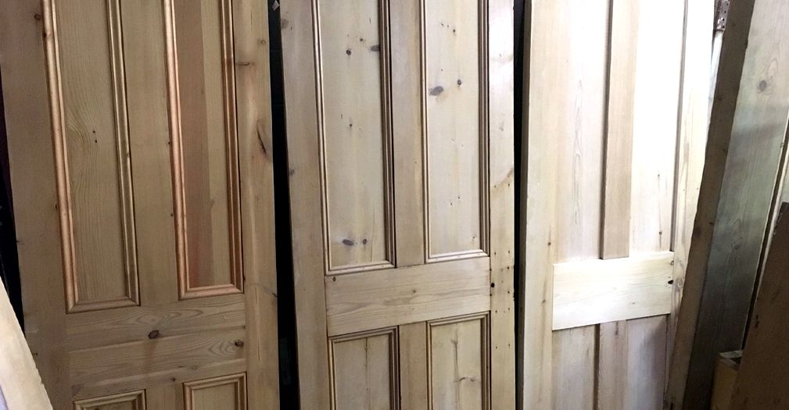
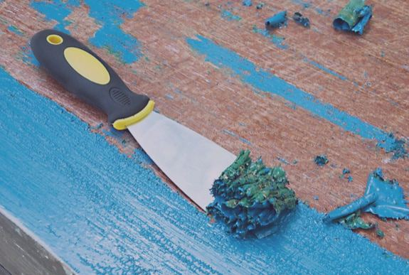

Paint stripping
Save time, money, hassle and the mess of paint stripping.
Why have your item stripped?
By paint stripping an item you can completely transform an old door, giving it a new and refreshed look. Even if you are planning on repainting your item, stripping the old paint off will give you a perfect base to repaint onto.

What can we strip?
We specialise in stripping and restoring doors and shutters. We also strip some items of furniture, so please give us a call for advice on any item you would like us to paint strip.
There are a few modern spray-on paints and varnishes that don't come off, but we can always advise once we see the item(s).
Types of wood
Most types of wood can be paint stripped. Once the paint is off and the item is dry, it can be sanded down and finished to show off the wood grain in all its glory.
Some hardwoods can darken when stripped, and we will always advise on this once we see the item. A good example of this is oak.
Need it sanded and finished too? See finishing work & restoration.

Call for advice or visit the workshop
We can always advise once we see the item. Find us at 2 Anson Road, Norwich Airport Industrial Estate.